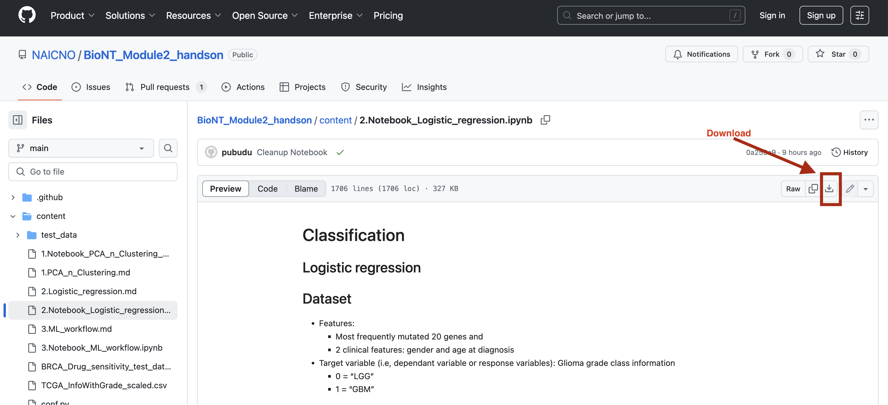

Classification
Logistic regression
Prerequisites
BioNT Applied Machine Learning for Biological Data
Module 1: Python Numpy and Pandas
Participants should gain skills introduced in above mentioned Lessons or equivalent skills.
Time
1 hours
Objectives
Objectives
Demonstrate the use of classification for cancer dataset
Example Logistic regression analysis with Glioma test dataset for Glioma sub-type classification
Note
ML use-case
Gliomas - most common primary tumors of the brain
Glioma categories
Low grade gliomas (LGG) - Slower growing gliomas
Glioblastoma Multiforme (GBM) - Most aggressive gliomas type
Glioma classification (grading) depend on the histological/imaging criteria, but clinical and molecular/mutation factors are also very crucial for accurately diagnose glioma patients.
Logistic regression based analysis tries to use most frequently mutated 20 genes and 3 clinical features to classify/ grade gliomas
Dataset
Features:
Most frequently mutated 20 genes and
2 clinical features: gender and age at diagnosis
Target variable (i.e, dependant variable or response variables): Glioma grade class information
0 = “LGG”
1 = “GBM”
Source
Notebook
